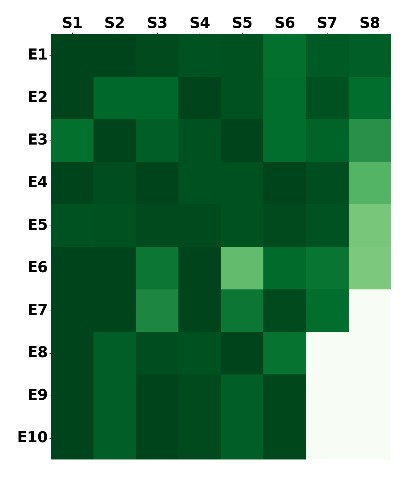
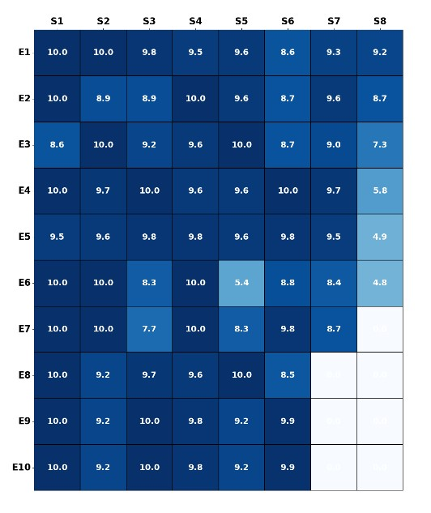
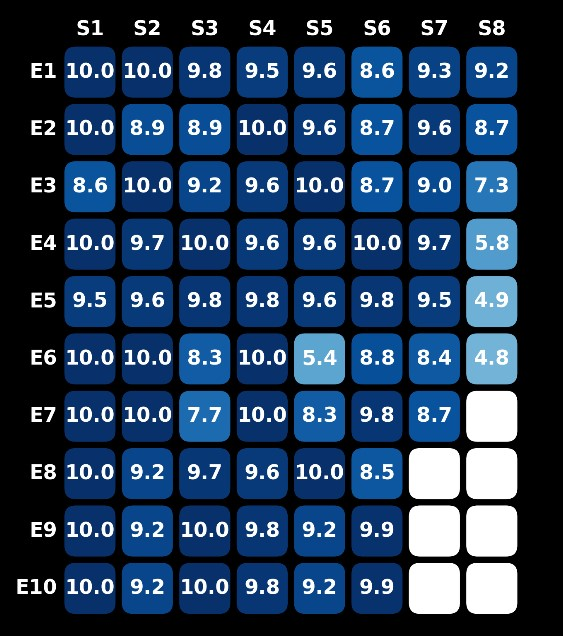

Visualizing TV Series Ratings with Heatmaps
Heatmaps are an excellent way to visualize data across two dimensions using color intensities. They provide insight into patterns, correlations, and anomalies, making them ideal for tracking progress over time. In this project, we use heatmaps to analyze the performance of a TV series, episode by episode, across multiple seasons.
TV Series Ratings: A Case Study
Below is a dataset showing normalized ratings (on a 10-point scale) from the first five seasons of a popular TV show. The goal is to visualize this data in a way that highlights trends and fluctuations in viewer sentiment across seasons and episodes.
| Episode | Season 1 | Season 2 | Season 3 | Season 4 | Season 5 | Season 6 | Season 7 | Season 8 |
|---|---|---|---|---|---|---|---|---|
| 1 | 10.0 | 10.0 | 9.8 | 9.5 | 9.6 | 8.6 | 9.3 | 9.2 |
| 2 | 10.0 | 8.9 | 8.9 | 10.0 | 9.6 | 8.7 | 9.6 | 8.7 |
| 3 | 8.6 | 10.0 | 9.2 | 9.6 | 10.0 | 8.7 | 9.0 | 7.3 |
| 4 | 10.0 | 9.7 | 10.0 | 9.6 | 9.6 | 10.0 | 9.7 | 5.8 |
| 5 | 9.5 | 9.6 | 9.8 | 9.8 | 9.6 | 9.8 | 9.5 | 4.9 |
The heatmap below visualizes this data. The x-axis represents the seasons, while the y-axis corresponds to episodes within each season. Darker shades indicate higher ratings, making it easy to spot patterns in the series’ performance over time.

In the next version, we add ratings as annotations within each heatmap cell to improve readability and provide more detailed insights:

Finally, instead of simple blocks, we enhance the visual appeal by using individual shapes such as rectangles or ellipses to represent each episode:

Beyond TV Shows: Application in Sports and Movies
The concept of heatmaps can be extended to various domains:
- Sports Performance: Visualize wins, losses, and draws over a season.
- Movie Revenue: Track box office trends over time, identifying high and low-performing weeks.
By tailoring the data points and choosing the right shapes or colors, heatmaps provide a versatile tool for visualizing performance trends across industries.
Conclusion
Heatmaps are a powerful and intuitive tool for identifying trends, anomalies, and outliers in data. Whether used for TV series ratings, sports analytics, or business insights, heatmaps offer a quick and visually appealing way to spot patterns at a glance. Start using heatmaps today to discover hidden trends in your data!